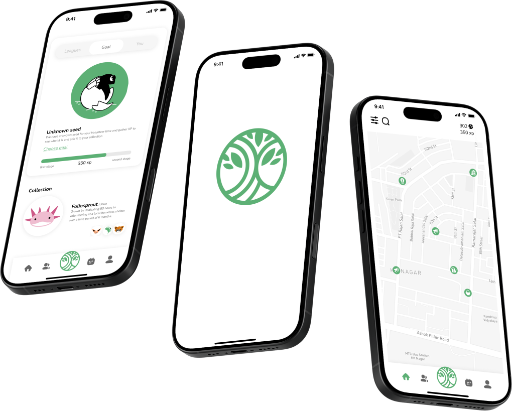
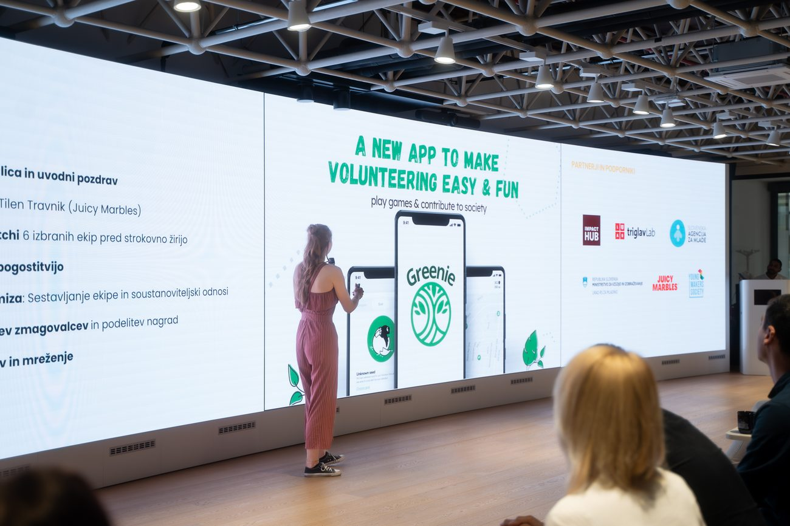
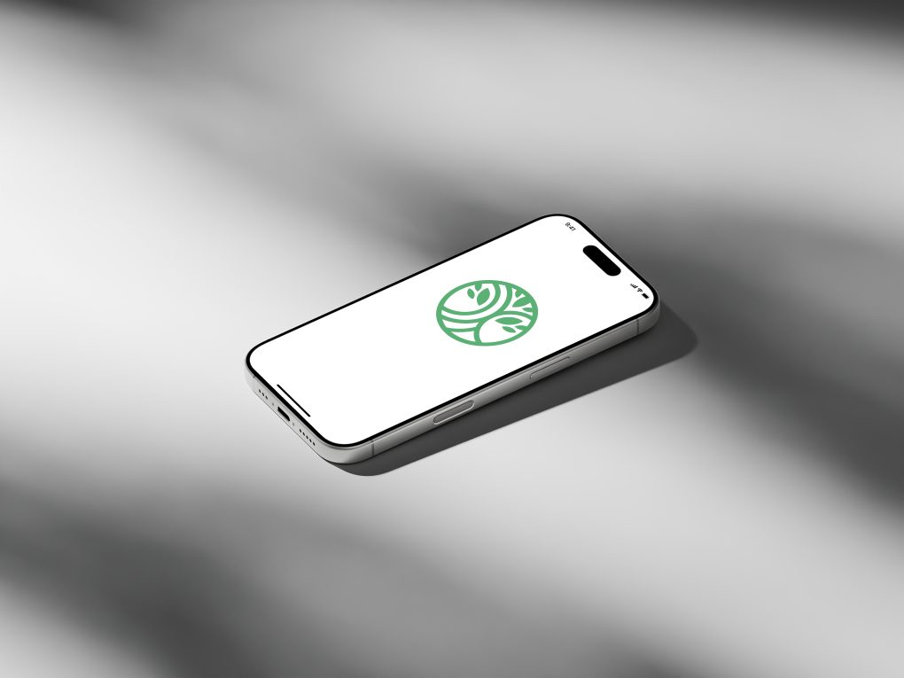

We created a civic-engagement app, Help2Go, and a B2B web portal that make volunteering and community action as engaging as social media. I led the product end to end, from a blank page to a launched product with national recognition.
Product & delivery
From discovery to a launched MVP
A gamified app that streamlines volunteering, donations and petitions for the nonprofit sector. Help2Go is a two-sided platform connecting go-to-market target segments with civic-engagement opportunities, and giving nonprofits the tools to recruit and onboard them smoothly. Gamified, cross-platform.

- Product manager for end-to-end creation of a civic-engagement (B2B + B2C) app + web portal.
- Responsible for product development, product strategy, requirements, user research, usability testing, directing product-related partners and alignment with the law. Focus on end-user and sophisticated personas.
- Hired and led a international team across Software Development, UI/UX, Research and Graphic Design.
- Directed product partnerships (Mediana, Greenpeace, Red Cross), enabled sales and marketing.
- Led international product discovery with focus groups, survey, client interviews and field feedback, 25+ nationalities.
- Executed statistical analysis with tailored advanced models.
- Owned legal requirements for the social company and product across the nonprofit and volunteering sector.
- Managed fundraising and secured ~100,000€ in the form of awards, public funding and investments.
Photos


Achievements
International research
Validated fit before writing code
- The app proved to be motivating and engaging, aligned with GTM priorities.
- Overview: 8 focus groups, 200+ survey responses, 30+ interviews across 25+ nationalities.
- Summary: applied GE Matrix, player types, volunteer types, Product Diffusion Curve, VFI and segmentation to shape the offer and roadmap.
UX design, artistic & scientific
Greenie’s gamified interface was built on top of in-depth primary research in our go-to-market target segment, people aged 18 to 30. I started with qualitative research, focus groups and interviews across both B2C and B2B, to pinpoint what people genuinely need and what is realistically possible.
That shaped a specialised quantitative phase: a comprehensive questionnaire I designed myself, funded and monitored by Mediana, Slovenia’s leading market and statistics research company. It brought together specialist recommendations from social marketing, consumer behaviour, gamification and statistics, with guidance from dr. Mateja Kos Koklič, dr. Vesna Žabkar, Maša Muster and dr. Michael Heron.
In practice, I built and nurtured partnerships across academia and industry to give the product the most grounded research base possible, work that dr. Mateja Kos Koklič described as “great progress in the field” of social marketing (translated from Slovenian).
- Research deck
- UX system
- Prototypes
Mentors
Guided by people I deeply respect
Jan Peloza · Social entrepreneur · CEO, Impact Hub Slovenia
Business strategy and B2G counselling, connecting a social company to government and the civic ecosystem.
Mark Kalin · Investor & Portfolio Manager, ABC Accelerator
Coaching on pitching and communication, framing the value proposition for funders and stakeholders.
dr. Matevž Pešek · Faculty of Computer & Information Science, UL
Technical and product-engineering mentorship, from Figma prototyping to delivery frameworks.
Accelerators & programmes
Impact Hub Ljubljana, PONI, Startup Incubator Savinjska, LUI, SIA Slovenia.
Talks: TEDx, EU House of Slovenia (Eutopia), Toastmasters Ljubljana, University of Novo Mesto, Falling Walls Lab Austria.
Key skills: cross-functional leadership, Jira, Claude & Figma prototyping, usability testing, data analytics, speaking, fundraising, sales.
Recognition
Social Impact Award • POPRI • Rector’s Award • Launchpad IH • One Digital Award Hungary • TEDx Speaker
Earlier publications and awards may appear under former name Nina Planinšek.
Recommendation letters
Earlier publications and awards may appear under former name Nina Planinšek.
- Jan PelozaCEO, Impact Hub Slovenia · Board Member, EUCLID Network
- Mark KalinDirector of Operations, Oasis · Investor, ABC Accelerator
- dr. Matevž PešekFaculty of Computer & Information Science, UL
The team
The people who built it with me
- Miklos BuchsbumBackend
- Martin KorelićFrontend
- Natalia LinowskaIllustrator
- Lilka MarszolekResearch assistant
- Tine MikušUX design
- Aleksander MitrovićFrontend
- Luka RadičevićGTM
- Elena RidovaBackend
- Bettina SzaboMarketing Manager
Partners & supporters
From the blog
Longer stories from building Greenie.